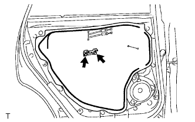
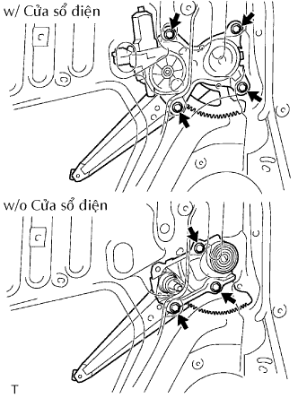
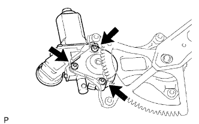

CỬA SAU > THÁO RA |
| 1. NGẮT CÁP ÂM RA KHỎI ẮC QUY |
| 2. THÁO CỤM TAY QUAY NÂNG HẠ KÍNH CỬA SAU |
 |
Hãy lồng dụng cụ tháo kẹp giữa tấm và ốp.
Giữ nguyên vị trí như trước đó và quay tay nắm cùng chiều kim đồng hồ để tháo nó.
| 3. THÁO ĐẾ PHÍA TRÊN TỰA TAY TRÊN CỬA SAU TRÁI |
Tháo vít.
Dùng một tô vít, nhả khớp 2 kẹp và 8 vấu. Tháo đế tựa tay cùng với công tắc nâng hạ cửa sổ theo hướng như được chỉ ra bởi mũi tên trong hình vẽ.
w/ Cửa sổ điện:
Ngắt giắc của công tắc.
 |
w/o Cửa sổ điện:
Dùng tôvít, nhả khớp 2 vấu và tháo công tắc nâng hạ kính.
| 4. THÁO TẤM ỐP TRANG TRÍ CỬA SAU TRÁI |
 |
Dùng tôvít, nhả khớp 10 kẹp và tháo tấm ốp.
Dùng tôvít, nhả khớp 5 vấu và tháo gioăng bên trong.
| 5. THÁO CỤM LOA NO.1 SAU TRÁI (w/ Loa phía sau) |
Ngắt giắc nối.
Dùng mũi khoan có đường kính nhỏ hơn 4 mm, khoan 3 mũ đinh tán để tháo loa.
Tiếp tục khoan và đẩy các mảnh vỡ của đinh tán ra.
Dùng một máy hút bụi chân không, làm sạch hạt vỡ của đinh tán và phoi từ bên trong của cửa.
| 6. THÁO CỤM TAY NẮM NGOÀI CỬA SAU TRÁI |
 |
Hãy dán băng dính bảo vệ phía dưới gioăng.
Dùng dụng cụ tháo nẹp, nhả khớp 4 vấu ra khỏi gioăng như trong hình vẽ.
| 7. THÁO TAY NẮM BÊN TRONG CỬA SAU TRÁI |
Dùng một tô vít, nhả khớp vấu.
Dịch chuyển tay nắm bên trong theo hướng được chỉ ra bởi mũi tên như trong hình vẽ. Điều này sẽ nhả các vấu và cho phép tháo tay nắm bên trong.
Ngắt 2 cáp ra khỏi tay nắm bên trong.
| 8. THÁO NẮP LỖ SỬA CHỮA CỬA SAU TRÁI |
|  |
Tháo 2 vít và giá bắt.
Dùng dụng cụ tháo kẹp, tháo 2 vòng đệm.
Tháo nắp lỗ sửa chữa.
| 9. THÁO THANH NGĂN KÍNH CỬA SAU TRÁI |
 |
Tháo 2 bu lông, vít và thanh ngăn.
| 10. THÁO KÍNH TAI XE SAU TRÁI |
Tháo kính cửa như được chỉ ra bởi mũi tên trong hình vẽ.
Tháo gioăng kính cửa tai xe sau.
| 11. THÁO KÍNH CỬA SAU TRÁI |
w/ Cửa sổ điện:
Lắp tạm thời công tắc nâng hạ cửa sổ.
w/o Cửa sổ điện:
Lắp tạm thời tay nắm nâng hạ cửa sổ.
Tháo kính ra khỏi bộ nâng hạ.
w/ Cửa sổ điện:
Tháo công tắc nâng hạ cửa sổ.
w/o Cửa sổ điện:
Tháo tay nắm bộ nâng hạ kính cửa sổ.
| 12. THÁO BỘ NÂNG HẠ KÍNH CỬA SAU TRÁI |
|  |
w/ Cửa sổ điện:
Ngắt giắc nối.
w/o Cửa sổ điện:
Tháo 4 bu lông và bộ nâng hạ.
w/o Cửa sổ điện:
Tháo 3 bulông và bộ nâng hạ.
| 13. THÁO CỤM MÔTƠ NÂNG HẠ KÍNH CỬA SỔ ĐIỆN BÊN TRÁI (w/ Cửa sổ điện) |
|  |
Dùng tô vít đầu hoa khế T25, tháo 3 vít và môtơ.
| 14. THÁO CỤM KHOÁ CỬA SAU TRÁI |
w/ Cửa sổ điện:
Ngắt giắc nối.
Dùng đầu khẩu hoa khế T30, tháo 3 vít và khoá cửa.
| 15. THÁO NẮP CHE TAY NẮM BÊN NGOÀI CỬA SAU TRÁI |
 |
Dùng đầu khẩu T30, nới lỏng vít và tháo nắp che tay nắm cửa bên ngoài.
| 16. THÁO CỤM TAY NẮM BÊN NGOÀI CỬA SAU TRÁI |
 |
Tháo tay nắm bằng cách trượt và kéo nó theo hướng chỉ ra bởi mũi tên trong hình vẽ.
| 17. THÁO KHUNG TAY NẮM NGOÀI CỬA SAU TRÁI |
 |
Dùng đầu khẩu T30, nới lỏng vít của khung cửa.
 |
Dùng kìm, hãm kẹp và tháo khung cửa.
| 18. THÁO LÓT PHÍA TRƯỚC TAY NẮM BÊN NGOÀI CỬA SAU |
 |
Nhả 2 khóa cài và tháo miếng lót.
| 19. THÁO LÓT PHÍA SAU TAY NẮM BÊN NGOÀI CỬA SAU |
 |
Nhả 2 khóa cài và tháo miếng lót.
| 20. THÁO CỤM THANH GIẰNG CỬA SAU TRÁI |
 |
Tháo 3 bu lông và thanh giằng cửa.
| 21. THÁO GIOĂNG CỬA SAU TRÁI |
 |
Dùng dụng cụ tháo kẹp, nhả khớp 19 kẹp và tháo gioăng cửa.